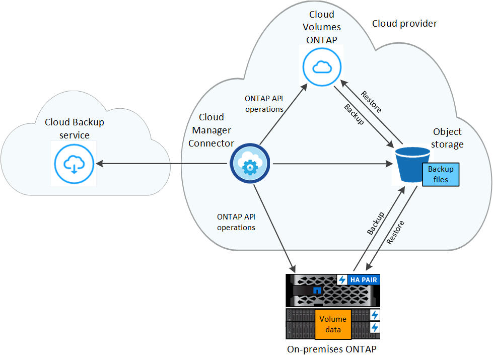

문서 변경 요청
문서 변경 요청 이 페이지 편집
이 페이지 편집 기여하는 방법 자세히 알아보기
기여하는 방법 자세히 알아보기클라우드 백업을 사용하여 ONTAP 클러스터 데이터를 보호합니다
Cloud Backup은 ONTAP 클러스터 데이터의 보호 및 장기 아카이브를 위한 백업 및 복원 기능을 제공합니다. 백업은 거의 복구 또는 클론 복제에 사용되는 볼륨 Snapshot 복사본과 관계없이 퍼블릭 또는 프라이빗 클라우드 계정의 오브젝트 저장소에 자동으로 생성되고 저장됩니다.
필요한 경우 백업에서 전체 volume 또는 하나 이상의 _files_를 동일하거나 다른 작업 환경으로 복원할 수 있습니다.
피처
백업 기능:
-
데이터 볼륨의 독립적인 복사본을 저비용 오브젝트 스토리지로 백업합니다.
-
클러스터의 모든 볼륨에 단일 백업 정책을 적용하거나 고유한 복구 지점 목표가 있는 볼륨에 다른 백업 정책을 할당합니다.
-
비용 절감을 위해 오래된 백업 파일을 아카이브 스토리지에 계층화(ONTAP 9.10.1 이상을 사용하는 경우 AWS 및 Azure에서 지원)
-
클라우드에서 클라우드로, 사내 시스템에서 퍼블릭 또는 프라이빗 클라우드로 백업
-
Cloud Volumes ONTAP 시스템의 경우 백업이 다른 구독/계정 또는 다른 지역에 있을 수 있습니다.
-
사용 중인 AES-256비트 암호화 유휴 및 TLS 1.2 HTTPS 연결로 백업 데이터를 보호합니다.
-
클라우드 공급자의 기본 암호화 키를 사용하는 대신, 고객이 관리하는 데이터 암호화 키를 사용하십시오.
-
단일 볼륨에 대해 최대 4,000개의 백업을 지원합니다.
복원 기능:
-
특정 시점에서 데이터 복원
-
볼륨 또는 개별 파일을 소스 시스템 또는 다른 시스템으로 복원합니다.
-
다른 구독/계정을 사용하거나 다른 지역에 있는 작업 환경으로 데이터를 복원합니다.
-
블록 수준에서 데이터를 복원하여 원래 ACL을 보존하면서 데이터를 사용자가 지정한 위치에 직접 배치합니다.
-
단일 파일 복원을 위한 개별 파일을 선택할 수 있는 탐색 가능한 검색 가능한 파일 카탈로그
지원되는 ONTAP 작업 환경 및 오브젝트 스토리지 공급자
Cloud Backup을 사용하면 다음과 같은 작업 환경에서 ONTAP 볼륨을 다음 퍼블릭 및 프라이빗 클라우드 공급자의 오브젝트 스토리지로 백업할 수 있습니다.
| 소스 작업 환경 | 백업 파일 대상 |
|---|---|
AWS의 Cloud Volumes ONTAP |
Amazon S3 |
Azure의 Cloud Volumes ONTAP |
Azure Blob |
Google의 Cloud Volumes ONTAP |
Google 클라우드 스토리지 |
사내 ONTAP 시스템 |
Amazon S3 Azure Blob Google 클라우드 스토리지 NetApp StorageGRID |
ONTAP 백업 파일에서 다음 작업 환경으로 볼륨 또는 개별 파일을 복원할 수 있습니다.
| 백업 파일 | 대상 작업 환경 | |
|---|---|---|
* 위치 * |
* 볼륨 복원 * |
* 파일 복원 * |
Amazon S3 |
Cloud Volumes ONTAP를 사내의 AWS ONTAP 시스템에 설치하고 |
Cloud Volumes ONTAP를 사내의 AWS ONTAP 시스템에 설치하고 |
Azure Blob |
Azure 사내 ONTAP 시스템의 Cloud Volumes ONTAP |
Azure 사내 ONTAP 시스템의 Cloud Volumes ONTAP |
Google 클라우드 스토리지 |
Google 사내 ONTAP 시스템의 Cloud Volumes ONTAP |
Google 사내 ONTAP 시스템의 Cloud Volumes ONTAP |
NetApp StorageGRID를 참조하십시오 |
사내 ONTAP 시스템 |
|
"사내 ONTAP 시스템"을 지칭할 때 FAS, AFF 및 ONTAP Select 시스템이 포함됩니다.
비용
ONTAP 시스템에서 Cloud Backup을 사용할 경우 리소스 비용과 서비스 요금의 두 가지 유형이 있습니다.
-
리소스 비용 *
클라우드 공급자에게 오브젝트 스토리지 용량과 클라우드 내 가상 머신/인스턴스 실행에 대한 리소스 비용이 지급됩니다.
-
백업의 경우 클라우드 공급자에게 오브젝트 스토리지 비용을 지불하십시오.
Cloud Backup은 소스 볼륨의 스토리지 효율성을 유지하므로 데이터_after_ONTAP 효율성(중복제거 및 압축이 적용된 후 더 적은 양의 데이터)에 대한 클라우드 공급자 개체 스토리지 비용을 지불하게 됩니다.
-
Browse & Restore를 사용한 파일 복원의 경우 Restore 인스턴스가 실행 중일 때만 클라우드 공급자에 컴퓨팅 비용을 지불합니다.
인스턴스는 복원할 개별 파일을 찾기 위해 백업 파일을 검색할 때만 실행됩니다. 비용 절감을 위해 사용하지 않을 때는 인스턴스가 해제됩니다.
-
AWS에서 복구 인스턴스는 에서 실행됩니다 "m5n.xlarge 인스턴스" CPU 4개, 16GB 메모리 및 EBS 전용 인스턴스 스토리지 포함. 운영 체제 이미지는 Amazon Linux 2입니다.
m5n.xlarge 인스턴스를 사용할 수 없는 지역에서는 대신 M5.xlarge 인스턴스에서 Restore가 실행됩니다.
-
Azure에서 Restore virtual machine은 에서 실행됩니다 "Standard_D4s_v3 VM" CPU 4개, 16GB 메모리 및 32GiB 디스크 운영 체제 이미지는 CentOS 7.5)입니다.
인스턴스의 이름은 _Cloud-Restore-instance_이며 연결된 계정 ID가 있습니다. 예: _ 클라우드 - 복원 - 인스턴스 - MyAccount _.
-
-
Browse & Restore를 사용한 볼륨 복원의 경우 별도의 인스턴스 또는 가상 머신이 필요하지 않으므로 비용이 들지 않습니다.
-
검색 및 복원을 사용한 볼륨 또는 파일 복원의 경우, 클라우드 공급자가 특정 리소스를 프로비저닝하며 검색 요청에 의해 스캔된 데이터 양과 관련된 TiB 비용이 있습니다.
-
Google에서는 새로운 버킷이 배포되고 "Google Cloud BigQuery 서비스" 계정/프로젝트 수준에서 프로비저닝됩니다.
-
아카이브 스토리지로 이동한 백업 파일(ONTAP 9.10.1 이상을 사용하는 경우 AWS에서 지원)에서 볼륨 데이터를 복구해야 하는 경우 클라우드 공급자로부터 추가 Per-GiB 검색 비용 및 요청당 요금이 부과됩니다.
-
서비스 요금 *
서비스 비용은 NetApp에 지불되며 이러한 백업에서_create_backups와 to_restore_volumes 또는 파일에 대한 비용을 모두 부담합니다. 오브젝트 스토리지에 백업된 ONTAP 볼륨의 소스 논리적 사용 용량(_Before_ONTAP 효율성)을 사용하여 계산한, 자신이 보호하는 데이터에 대해서만 비용을 지불합니다. 이 용량을 FETB(Front-End Terabytes)라고도 합니다.
백업 서비스에 대한 비용을 지불하는 방법에는 세 가지가 있습니다. 첫 번째 옵션은 클라우드 공급자를 구독하는 것입니다. 구독하면 매월 요금을 지불할 수 있습니다. 두 번째 옵션은 연간 계약을 얻는 것입니다. 이 계약은 AWS를 통해서만 가능합니다. 세 번째 옵션은 NetApp에서 직접 라이센스를 구매하는 것입니다. 를 읽습니다 라이센싱 섹션을 참조하십시오.
라이센싱
Cloud Backup은 세 가지 라이센스 옵션, 즉 PAYGO(Pay As You Go) 구독, AWS Marketplace의 연간 계약, BYOL(Bring Your Own License) 옵션으로 제공됩니다. PAYGO에 가입하면 30일 무료 평가판을 사용할 수 있습니다.
용량제 구독
Cloud Backup은 용량제 모델로 소비 기반 라이센스를 제공합니다. 클라우드 공급자의 마켓플레이스를 구독한 후, 백업된 데이터의 경우 GiB당 비용을 지불하면 됩니다. 이러한 데이터를 미리 지불할 필요가 없습니다. 클라우드 공급자가 월별 요금을 청구합니다.
연간 계약(AWS만 해당)
AWS Marketplace에서 12개월, 24개월 또는 36개월 조건에 두 가지 연간 계약을 사용할 수 있습니다.
-
Cloud Volumes ONTAP 데이터와 사내 ONTAP 데이터를 백업할 수 있는 '클라우드 백업' 계획
-
Cloud Volumes ONTAP와 클라우드 백업을 번들로 제공할 수 있는 "CVO Professional" 계획. 여기에는 이 라이센스에 대해 청구된 Cloud Volumes ONTAP 볼륨에 대한 무제한 백업이 포함됩니다(백업 용량은 라이센스에 포함되지 않음).
각자 보유한 라이센스를 가지고 오시기 바랍니다
BYOL은 1TiB 단위로 기간 기반(12, 24 또는 36개월) _ 및 _ 용량 기반 예를 들어, 1년, 최대 용량(10TiB)에 대해 서비스 사용을 위해 NetApp에 비용을 지불합니다.
Cloud Manager Digital Wallet 페이지에 입력한 일련 번호를 통해 서비스를 활성화할 수 있습니다. 두 제한 중 하나에 도달하면 라이센스를 갱신해야 합니다. Backup BYOL 라이센스는 와 관련된 모든 소스 시스템에 적용됩니다 "Cloud Manager 계정".
Cloud Backup의 작동 방식
Cloud Volumes ONTAP 또는 사내 ONTAP 시스템에서 클라우드 백업을 활성화하면 서비스가 데이터의 전체 백업을 수행합니다. 볼륨 스냅샷은 백업 이미지에 포함되지 않습니다. 초기 백업 후에는 모든 추가 백업이 증분 백업되므로 변경된 블록과 새 블록만 백업됩니다. 이렇게 하면 네트워크 트래픽이 최소로 유지됩니다.
대부분의 경우 모든 백업 작업에 Cloud Manager UI를 사용합니다. 그러나 ONTAP 9.9.1부터 ONTAP 시스템 관리자를 사용하여 사내 ONTAP 클러스터의 볼륨 백업 작업을 시작할 수 있습니다. "System Manager를 사용하여 Cloud Backup을 사용하여 볼륨을 클라우드에 백업하는 방법을 알아보십시오."

|
백업 파일을 관리하거나 변경하기 위해 클라우드 제공업체 환경에서 직접 수행한 작업은 파일을 손상시킬 수 있으며 지원되지 않는 구성을 초래할 수 있습니다. |
다음 이미지는 각 구성 요소 간의 관계를 보여줍니다.

백업이 상주하는 위치입니다
백업 복사본은 Cloud Manager에서 클라우드 계정에 만드는 오브젝트 저장소에 저장됩니다. 클러스터/작업 환경당 하나의 오브젝트 저장소가 있으며 Cloud Manager에서는 오브젝트 저장소의 이름을 "NetApp-backup-clusteruuid"로 지정합니다. 이 오브젝트 저장소를 삭제하지 마십시오.
-
AWS에서 Cloud Manager는 를 지원합니다 "Amazon S3 블록 공용 액세스 기능입니다" S3 버킷에서.
-
Azure에서 Cloud Manager는 Blob 컨테이너용 스토리지 계정이 있는 새 리소스 그룹 또는 기존 리소스 그룹을 사용합니다. 클라우드 관리자 "BLOB 데이터에 대한 공개 액세스를 차단합니다" 기본적으로 사용됩니다.
-
GCP에서 Cloud Manager는 Google Cloud Storage 버킷을 위한 스토리지 계정이 있는 신규 또는 기존 프로젝트를 사용합니다.
-
StorageGRID에서 Cloud Manager는 오브젝트 저장소 버킷에 기존 스토리지 계정을 사용합니다.
향후 클러스터의 대상 오브젝트 저장소를 변경하려면 가 필요합니다 "작업 환경에 대한 클라우드 백업 등록을 취소합니다"를 선택한 다음 새로운 클라우드 공급자 정보를 사용하여 Cloud Backup을 설정합니다.
지원되는 스토리지 클래스 또는 액세스 계층
-
AWS에서는 백업이 _Standard_storage 클래스에서 시작되고 30일 후에 _Standard - Infrequent Access_storage 클래스로 전환됩니다.
클러스터에서 ONTAP 9.10.1 이상을 사용하는 경우 추가 비용 최적화를 위해 일정 일 후에 이전 백업을 _S3 Glacier_또는 _S3 Glacier Deep Archive_storage에 계층화하도록 선택할 수 있습니다. "AWS 아카이브 스토리지에 대해 자세히 알아보십시오".
-
Azure에서 백업은 _Cool_access 계층과 연결됩니다.
클러스터에서 ONTAP 9.10.1 이상을 사용하는 경우 추가 비용 최적화를 위해 일정 일 후에 이전 백업을 _Azure Archive_storage에 계층화하도록 선택할 수 있습니다. "Azure 아카이브 스토리지에 대해 자세히 알아보십시오".
-
GCP에서 백업은 기본적으로 _Standard_storage 클래스와 연결됩니다.
또한 더 낮은 cost_Nearline_storage 클래스 또는 _Coldline_or_Archive_storage 클래스를 사용할 수 있습니다. Google 항목을 참조하십시오 "스토리지 클래스" 스토리지 클래스 변경에 대한 자세한 내용은 를 참조하십시오.
-
StorageGRID에서 백업은 _Standard_storage 클래스와 연결됩니다.
클러스터당 사용자 지정 가능한 백업 스케줄 및 보존 설정
작업 환경에 Cloud Backup을 활성화하면 처음에 선택한 모든 볼륨이 사용자가 정의한 기본 백업 정책을 사용하여 백업됩니다. RPO(복구 지점 목표)가 다른 특정 볼륨에 서로 다른 백업 정책을 할당하려면 해당 클러스터에 대한 추가 정책을 생성한 다음 해당 정책을 다른 볼륨에 할당할 수 있습니다.
모든 볼륨의 시간별, 일별, 주별 및 월별 백업을 조합하여 선택할 수 있습니다. 또한 3개월, 1년 및 7년 동안 백업 및 보존을 제공하는 시스템 정의 정책 중 하나를 선택할 수도 있습니다. 이러한 정책은 다음과 같습니다.
| 백업 정책 이름입니다 | 간격당 백업… | 최대 백업 | ||
|---|---|---|---|---|
* 매일 * |
* 매주 * |
* 매월 * |
||
Netapp3개월 보존 |
30 |
13 |
3 |
46 |
Netapp1YearRetention |
30 |
13 |
12 |
55 |
Netapp7YearsRetention |
30 |
53 |
84 |
167 |
ONTAP System Manager 또는 ONTAP CLI를 사용하여 클러스터에서 생성한 백업 보호 정책도 선택 사항으로 표시됩니다.
범주 또는 간격에 대한 최대 백업 수에 도달하면 오래된 백업이 제거되므로 항상 최신 백업이 유지됩니다.
참고: 이 작업은 수행할 수 있습니다 "볼륨의 필요 시 백업을 생성합니다" 예약된 백업에서 생성된 백업 파일 외에 언제든지 Backup Dashboard에서 백업 파일을 생성할 수 있습니다.

|
데이터 보호 볼륨의 백업 보존 기간은 소스 SnapMirror 관계에 정의된 보존 기간과 동일합니다. 원하는 경우 API를 사용하여 변경할 수 있습니다. |
FabricPool 계층화 정책 고려 사항
백업하는 볼륨이 FabricPool 애그리게이트에 있고 '없음' 이외의 할당된 정책이 있을 때 알아야 할 몇 가지 사항이 있습니다.
-
FabricPool 계층 볼륨의 첫 번째 백업을 수행하려면 오브젝트 저장소에서 모든 로컬 및 모든 계층화된 데이터를 읽어야 합니다. 백업 작업에서는 오브젝트 스토리지의 콜드 데이터를 "재가열"하지 않습니다.
이 경우 클라우드 공급자로부터 데이터를 읽는 데 드는 비용이 1회 증가할 수 있습니다.
-
후속 백업은 증분 백업이므로 이 효과가 없습니다.
-
처음 생성될 때 볼륨에 계층화 정책이 할당되면 이 문제가 표시되지 않습니다.
-
-
모든 계층화 정책을 볼륨에 할당하기 전에 백업의 영향을 고려하십시오. 데이터는 즉시 계층화되므로 Cloud Backup은 로컬 계층이 아닌 클라우드 계층에서 데이터를 읽습니다. 동시 백업 작업은 네트워크 링크를 클라우드 오브젝트 저장소로 공유하기 때문에 네트워크 리소스가 포화 상태가 되면 성능이 저하될 수 있습니다. 이 경우 이러한 유형의 네트워크 포화를 줄이기 위해 여러 개의 네트워크 인터페이스(LIF)를 사전에 구성할 수 있습니다.
지원되는 볼륨
Cloud Backup은 FlexVol 읽기-쓰기 볼륨 및 SnapMirror 데이터 보호(DP) 대상 볼륨을 지원합니다.
FlexGroup 볼륨 및 SnapLock 볼륨은 현재 지원되지 않습니다.
제한 사항
-
이전 백업 파일을 아카이브 스토리지에 계층화하려면 클러스터에서 ONTAP 9.10.1 이상(현재 AWS 및 Azure에서 지원됨)이 실행되고 있어야 합니다. 아카이브 스토리지에 있는 백업 파일에서 볼륨을 복원하려면 대상 클러스터에서 ONTAP 9.10.1 이상이 실행되고 있어야 합니다.
-
정책에 할당된 볼륨이 없을 때 백업 정책을 생성하거나 편집할 때 유지되는 백업 수는 최대 1018개가 될 수 있습니다. 이 문제를 해결하려면 정책을 생성할 백업 수를 줄일 수 있습니다. 그런 다음 정책에 볼륨을 할당한 후 정책을 편집하여 최대 4000개의 백업을 생성할 수 있습니다.
-
DP(데이터 보호) 볼륨을 백업할 때 다음 SnapMirror 레이블과의 관계는 클라우드에 백업되지 않습니다.
-
app_consistent
-
ALL_SOURCE_SNSHOT
-
-
SVM-DR 볼륨 백업은 다음 제한 사항으로 지원됩니다.
-
백업은 ONTAP 보조 백업에서만 지원됩니다.
-
볼륨에 적용된 스냅샷 정책은 매일, 매주, 매월 등 Cloud Backup에서 인식하는 정책 중 하나여야 합니다. 기본 "sm_created" 정책(* 미러 모든 스냅샷 * 에 사용됨) 가 인식되지 않으며 백업할 수 있는 볼륨 목록에 DP 볼륨이 표시되지 않습니다.
-
-
지금 백업 * 버튼을 사용한 임시 볼륨 백업은 데이터 보호 볼륨에서 지원되지 않습니다.
-
SM-BC 구성은 지원되지 않습니다.
-
MCC(MetroCluster) 백업은 ONTAP 2차 백업에서만 지원됩니다. MCC > SnapMirror > ONTAP > 클라우드 백업 > 오브젝트 스토리지.
-
ONTAP는 단일 볼륨에서 여러 오브젝트 저장소로 이루어진 SnapMirror 관계를 지원하지 않습니다. 따라서 Cloud Backup에서는 이 구성을 지원하지 않습니다.
-
오브젝트 저장소의 WORM/Compliance 모드는 지원되지 않습니다.
단일 파일 복구 제한 사항
이러한 제한 사항은 특별히 호출되지 않는 한 검색 및 복원 및 찾아보기 및 복원 방법 모두에 적용됩니다.
-
Browse & Restore는 한 번에 최대 100개의 개별 파일을 복원할 수 있습니다.
-
Search & Restore는 한 번에 하나의 파일을 복원할 수 있습니다.
-
현재 폴더/디렉토리 복원을 지원하지 않습니다.
-
복원 중인 파일은 대상 볼륨의 언어와 동일한 언어를 사용해야 합니다. 언어가 동일하지 않으면 오류 메시지가 나타납니다.
-
서로 다른 서브넷에서 서로 다른 클라우드 관리자와 동일한 계정을 사용하는 경우 파일 레벨 복원이 지원되지 않습니다.
-
백업 파일이 아카이브 스토리지에 있는 경우 개별 파일을 복원할 수 없습니다.